Coupled Mode Laser Pairs
The set of routines in this directory implements the coupled mode model for a pair of laterally coupled slab waveguides [1].
Contents
Important note
Several routines call utility functions defined in the 'Numeric' directory. It is important that the relative location of this directory is correct, as the routines that call these functions attempt to add the directory to the path if it is not already on it.
Both the 'Numeric' and 'Coupled Mode Twin' directorie should therefore be in the 'Photonic-Neurons' directory, which in turn should be directly on the default MATLAB path. This should be
'C:\Users\<user_name>\Documents\MATLAB'
or similar. Type 'userpath' at the command line to check.
Functionality
| Routine | Notes |
|---|---|
| coupled1D | Implements the rate equations for the model. Used in conjuction with the Runge-Kutta solver and called by coupled1DS |
| coupled1DS | Interface routine calling coupled1D. Used in conjunction with the non-linear solver to find steady state solutions |
| loadParams | Loads laser parameters that have been saved as MAT files. |
| runCoupled1D | Runs a time simulution (see notes below for an example). |
| singleSlab | Calculates the mode profile and coupling coefficients for identical slab waveguides. This is called by the routine runCoupled1D to calculate the coupling coefficient for the waveguide separation. It may also be called directly to plot the modal profile. |
Rate equations
The normalised rate equations for the coupled mode model are [1]
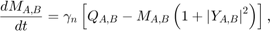
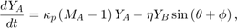

![$$\frac{d\phi}{dt} = \alpha_{H}\kappa_{p}\left(M_{A} - M_{B}\right) -
\Delta\Omega + \eta\left[\frac{Y_{A}}{Y_{B}}\cos\left(\theta -
\phi\right) - \frac{Y_{B}}{Y_{A}}\cos\left(\theta + \phi\right)\right],$$](CoupledMode_eq18298865038121557359.png)
where the 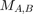 are the carrier densities in guides 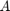 and  , 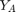 and
, 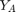 and  are the optical fields,
are the optical fields,  is the phase difference between the fields in and ,
is the phase difference between the fields in and ,  , where 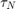 is the carrier lifetime,
, where 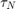 is the carrier lifetime,  , where
, where  is the photon lifetime,
is the photon lifetime,  and 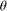 are the magnitude and phase of the coupling coefficient,
and 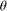 are the magnitude and phase of the coupling coefficient,  and
and  are the normalised pumping rates in each laser and 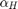 is the linewidth enhancement factor.
are the normalised pumping rates in each laser and 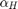 is the linewidth enhancement factor.
These equations are implemented in the function coupled1D, which is used with both the Runge-Kutta solver to find the temporal dynamics and the non-linear solver for finding the steady state solutions.
Example code
The code examples here are all contained within the script CoupledMode, which may be run directly from the command line or by clicking on the run button in the editor.
The loadParams routine loads a mat file containing laser guide parameters. The file 'PRA.mat' contains parameters for Ref [1]. This returns a structure variable, which should be named 'param'.
param = loadParams('PRA_95_053869'); % Laser cavity parameters using in Ref [1]
See loadParams for details of the fields initialised.
To perform a time simulation, we will need to assign further values to pass to the routine runCoupled1D. These are
tsim = 8; % Simulation time (in units of 1/yn) QA = 10; % Normalised pump power in laser A QB = 10; % Normalised pump power in laser B d = 16; % Distance between guides (microns) DW = 0; % Frequency detuning opt = 1; % Optional parameter for 'runCoupled1D.m' to plot graphs
Call the routine to calculate temporal dynamics
[tout, Nout] = runCoupled1D(tsim, QA, QB, d, DW, param, opt); %#ok<ASGLU>
The return value 'tout' is a 4001x1 array contained the time points, 'Nout' is a 4001x5 array containing the dynamic variables (see runCoupled1D for details).
Without extra arguments, the routine sets default values for the initial conditions. It is also possible to pass initial conditions to the function as an optional extra argument in the form of a 5 x 1 array. The values of the array should be in normalised form and in the order:
| N0(1) | Carrier concentration in guide A |
| N0(2) | Carrier concentration in guide B |
| N0(3) | Optical amplitude in guide A |
| N0(4) | Optical amplitude in guide B |
| N0(5) | Relative phase between fields in A and B |
We may set up such an array using the steady state values at the end of the simulation carried out above, using
N0 = Nout(end,:); % End values of simulation N0 = transpose(N0); % Transpose array to be in 5 x 1 form
The runCoupled1D routine may now be called using
opt = 0; % Do not plot graphs this time
[tout, Nout] = runCoupled1D(tsim, QA, QB, d, DW, param, opt, N0);
References
[1] M. J. Adams, N. Li, B. R. Cemlyn, H. Susanto and I. D. Henning, Phys. Rev. A 95(5), 053869 (2017)